YOUNGTERS PEACE
Pada tahun 2021, saya mengikuti lomba poster bertajuk Karya Pemuda Bangsa Indonesia sebagai bentuk partisipasi dalam menuangkan ide dan gagasan kreatif melalui media visual. Dalam kompetisi ini, saya mengembangkan kemampuan dalam menyampaikan pesan secara komunikatif dan estetis, sekaligus melatih kepekaan terhadap isu yang relevan dengan peran generasi muda dalam pembangunan bangsa.

Occupational Health and Safety Community
Pada tahun 2026, saya berpartisipasi sebagai peserta dalam lomba video kreatif yang diselenggarakan dalam rangka B3KN OHSC FKM UI 2026. Kegiatan ini menjadi wadah bagi saya untuk mengembangkan ide kreatif sekaligus menyampaikan pesan secara visual terkait isu kesehatan dan keselamatan kerja, serta melatih kemampuan dalam produksi video, storytelling, dan penyampaian pesan yang komunikatif kepada audiens.

Webinar Clean state and clean code
Saya mengikuti webinar berjudul Clean State and Clean Code: Konsumsi API di Flutter dengan Dio Riverpod sebagai upaya memperdalam pemahaman di bidang pengembangan aplikasi, khususnya dalam membangun kode yang rapi, terstruktur, dan efisien. Dalam kegiatan ini, saya mempelajari konsep clean architecture serta praktik terbaik dalam mengelola konsumsi API menggunakan Flutter dengan bantuan library Dio dan Riverpod, sehingga dapat meningkatkan kualitas penulisan kode serta pengelolaan state dalam pengembangan aplikasi..
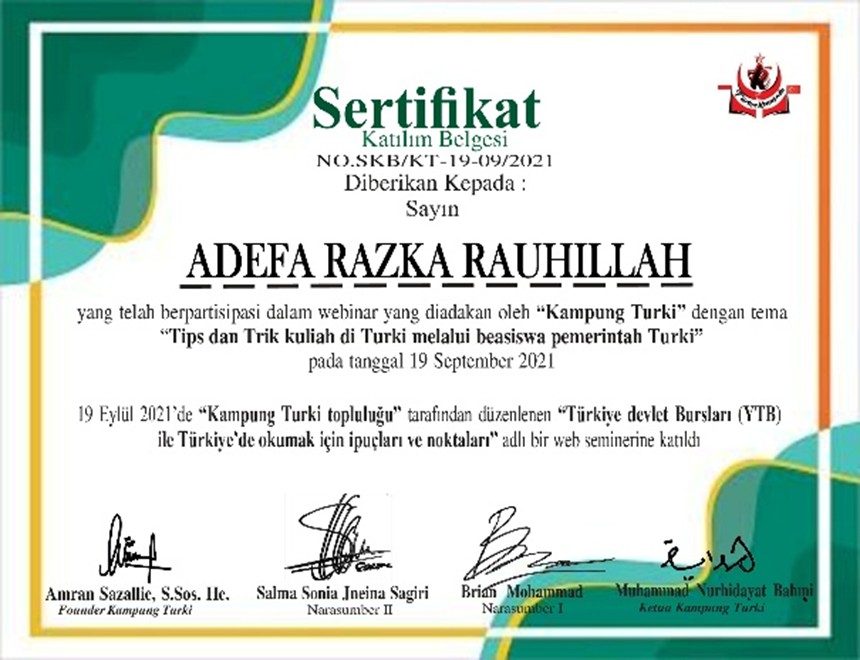
Webinar Tips Trik Kuliah di Turki
Saya mengikuti webinar berjudul Tips Trik Kuliah di Turki Beasiswa Pemerintah Turkey 2021 sebagai bentuk eksplorasi peluang studi lanjut di luar negeri. Melalui kegiatan ini, saya memperoleh wawasan mengenai prosedur pendaftaran, persyaratan, serta strategi dalam meraih beasiswa pemerintah Turki, sekaligus memperluas perspektif saya terkait pengalaman kuliah di lingkungan internasional.
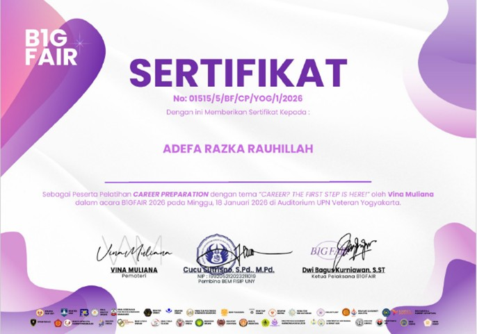
webinar Career Preparation Bigfair
Saya mengikuti webinar Career Preparation Bigfair Webinar 2026 sebagai bagian dari upaya mempersiapkan diri menghadapi dunia kerja. Dalam kegiatan ini, saya memperoleh pemahaman mengenai strategi membangun karier, mulai dari penyusunan CV yang efektif, pengembangan keterampilan yang relevan, hingga kesiapan menghadapi proses rekrutmen di era profesional yang kompetitif.
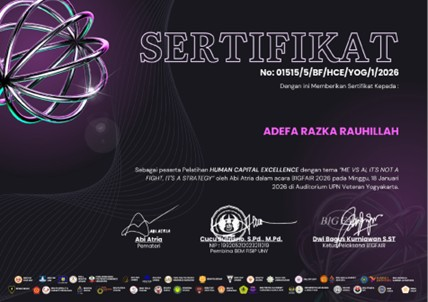
webinar Human Capital Excellence Bigfair
Saya mengikuti webinar Human Capital Excellence Bigfair Webinar 2026 sebagai bagian dari upaya memperluas pemahaman di bidang pengembangan sumber daya manusia. Dalam kegiatan ini, saya memperoleh wawasan mengenai pentingnya pengelolaan human capital yang efektif, strategi pengembangan talenta, serta peran SDM dalam mendukung pertumbuhan organisasi di era modern.
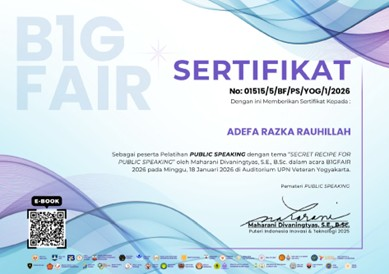
webinar Public Speaking Bigfair
Saya mengikuti webinar Public Speaking Bigfair Webinar 2026 sebagai upaya mengembangkan kemampuan komunikasi, khususnya dalam berbicara di depan umum secara percaya diri dan terstruktur. Melalui kegiatan ini, saya mempelajari teknik penyampaian pesan yang efektif, pengelolaan intonasi dan bahasa tubuh, serta cara membangun interaksi yang baik dengan audiens.
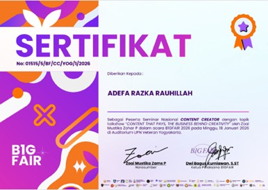
webinar Content Creator Bigfair
Saya mengikuti webinar Content Creator Bigfair Webinar 2026 sebagai upaya mengembangkan wawasan di bidang pembuatan konten digital. Melalui kegiatan ini, saya mempelajari strategi membangun konten yang menarik, memahami tren digital, serta mengoptimalkan peran sebagai content creator dalam membangun audiens dan personal branding secara lebih efektif.
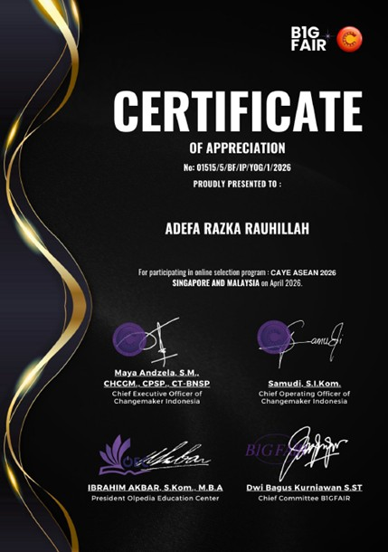
seleksi online program CAYE ASEAN 2026 Bigfair
Saya mengikuti tahap seleksi online program CAYE ASEAN 2026 sebagai bagian dari upaya mengembangkan diri dalam lingkup internasional. Proses seleksi ini menuntut kemampuan berpikir kritis, komunikasi, serta kesiapan dalam menghadapi tantangan global, sekaligus memberikan pengalaman berharga dalam berkompetisi di tingkat regional ASEAN.
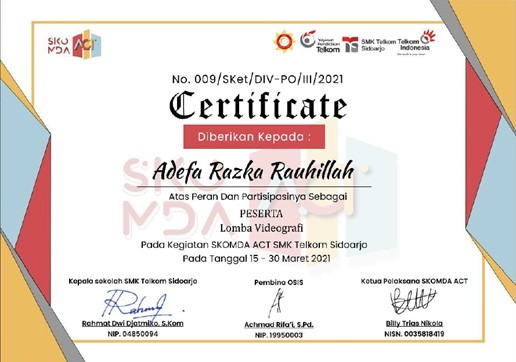
lomba videografi Skomda
Saya berpartisipasi sebagai peserta dalam lomba videografi yang diselenggarakan pada Skomda ACT SMK Telkom Sidoharjo sebagai sarana mengembangkan kemampuan di bidang produksi video. Melalui kegiatan ini, saya mengasah keterampilan dalam pengambilan gambar, editing, serta penyusunan alur cerita visual agar dapat menyampaikan pesan secara kreatif dan komunikatif.
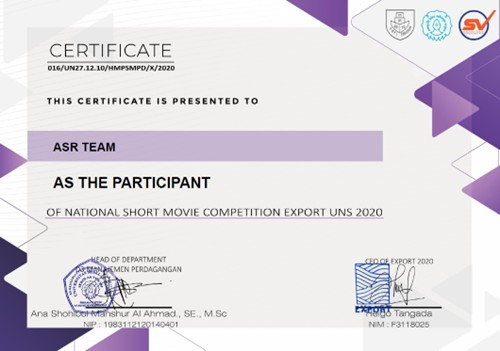
lomba Short Movie Export UNS 2020
Saya berpartisipasi sebagai peserta dalam lomba film pendek Short Movie Export UNS 2020 sebagai bentuk pengembangan minat di bidang videografi dan storytelling. Melalui kegiatan ini, saya mengasah kemampuan dalam merancang alur cerita, pengambilan gambar, serta proses editing untuk menghasilkan karya visual yang komunikatif dan memiliki nilai estetika.
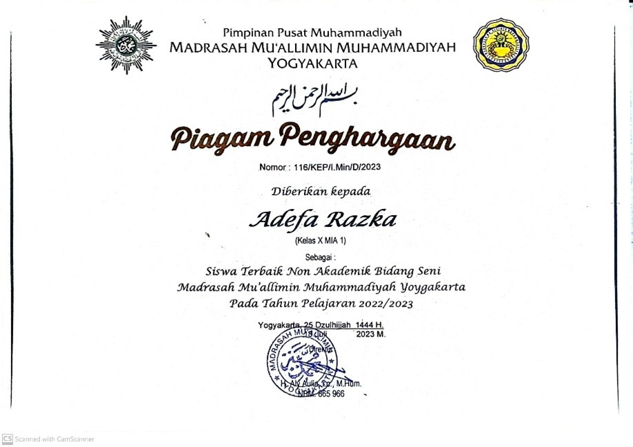
lomba Short Movie Export UNS 2020
Saya meraih penghargaan sebagai siswa terbaik non-akademik bidang seni di Madrasah Mu’allimin Muhammadiyah Yogyakarta pada tahun ajaran 2022/2023 sebagai bentuk apresiasi atas dedikasi dan konsistensi dalam mengembangkan potensi di bidang seni. Penghargaan ini mencerminkan kemampuan saya dalam menyalurkan kreativitas, berkontribusi dalam kegiatan seni, serta menunjukkan komitmen dalam mengembangkan bakat di luar aspek akademik.
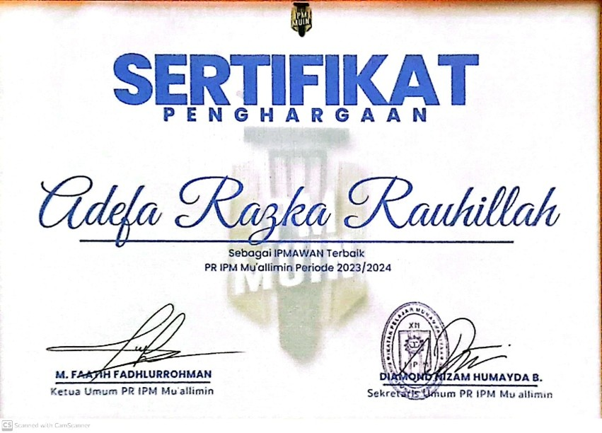
IPMAWAN Terbaik di PR IPM Mu’allimin periode 2023/2024
Saya meraih penghargaan sebagai IPMAWAN Terbaik di PR IPM Mu’allimin periode 2023/2024 sebagai bentuk apresiasi atas kontribusi aktif dalam organisasi. Penghargaan ini mencerminkan kemampuan saya dalam kepemimpinan, tanggung jawab, serta partisipasi dalam menjalankan program kerja dan kegiatan organisasi secara konsisten.
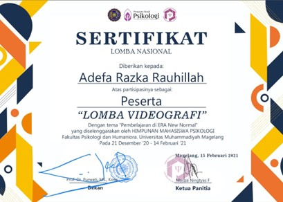
lomba videografi Himpsikologi
Saya berpartisipasi sebagai peserta dalam lomba videografi yang diselenggarakan oleh Himpsikologi Universitas Muhammadiyah Magelang sebagai sarana untuk mengembangkan kemampuan dalam bidang fotografi. Melalui kegiatan ini, saya mengasah kepekaan visual, komposisi gambar, serta kemampuan dalam menangkap momen yang memiliki nilai estetika dan makna.
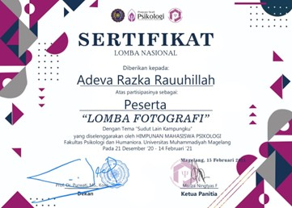
lomba fotografi Himpsikologi
Saya berpartisipasi sebagai peserta dalam lomba fotografi yang diselenggarakan oleh Himpsikologi Universitas Muhammadiyah Magelang sebagai sarana untuk mengembangkan kemampuan dalam bidang fotografi. Melalui kegiatan ini, saya mengasah kepekaan visual, komposisi gambar, serta kemampuan dalam menangkap momen yang memiliki nilai estetika dan makna.
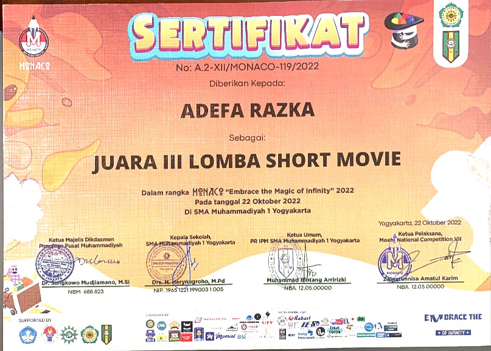
Lomba Short Movie Monaco
Saya berperan sebagai editor dalam produksi film pendek yang berhasil meraih juara 3 tingkat nasional pada ajang Lomba Short Movie Monaco. Dalam peran ini, saya bertanggung jawab dalam proses penyuntingan visual, pengolahan alur cerita, serta memastikan kualitas akhir video agar mampu menyampaikan pesan secara kuat dan menarik kepada audiens.
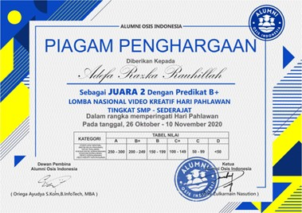
Video Kreatif Hari Pahlawan 2020
Saya meraih juara 2 dalam lomba video kreatif pada kegiatan PMBA Video Kreatif Hari Pahlawan 2020 sebagai bentuk apresiasi atas kemampuan dalam mengolah ide dan menyampaikan pesan melalui media visual. Pencapaian ini menunjukkan keterampilan saya dalam produksi video, mulai dari konsep, pengambilan gambar, hingga proses editing yang mampu menghasilkan karya yang komunikatif dan menarik.
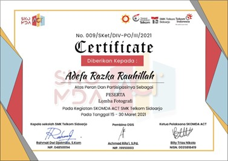
lomba fotografi SMK Telkom Sidoharjo
Saya berpartisipasi sebagai peserta dalam lomba fotografi yang diselenggarakan oleh SMK Telkom Sidoharjo pada tahun 2021 sebagai bagian dari pengembangan kemampuan di bidang fotografi. Melalui kegiatan ini, saya mengasah keterampilan dalam komposisi, pencahayaan, serta kepekaan dalam menangkap momen yang memiliki nilai estetika dan makna visual.
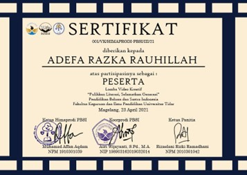
lomba video kreatif Universitas Tidar
Saya berpartisipasi sebagai peserta dalam lomba video kreatif yang diselenggarakan oleh Universitas Tidar pada tahun 2021 sebagai sarana untuk mengembangkan kemampuan di bidang produksi video. Melalui kegiatan ini, saya mengasah keterampilan dalam merancang konsep, pengambilan gambar, serta proses editing untuk menghasilkan karya visual yang komunikatif dan menarik.
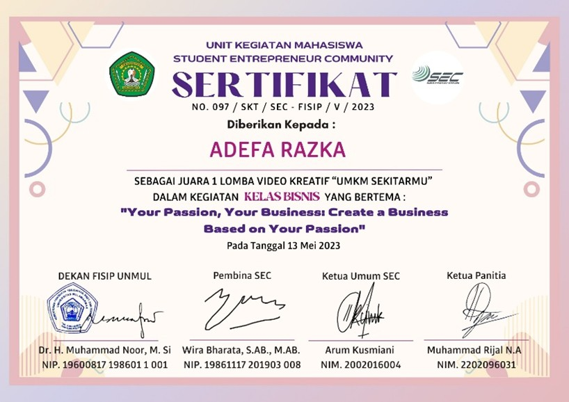
lomba video kreatif Universitas Mulawarmanr
Saya meraih juara 1 dalam lomba video kreatif yang diselenggarakan oleh Universitas Mulawarman pada tahun 2023 sebagai bentuk apresiasi atas kemampuan dalam mengembangkan ide kreatif dan menyampaikannya melalui media visual. Pencapaian ini mencerminkan keterampilan saya dalam seluruh proses produksi video, mulai dari perencanaan konsep, pengambilan gambar, hingga editing yang mampu menghasilkan karya yang komunikatif, menarik, dan berdampak.
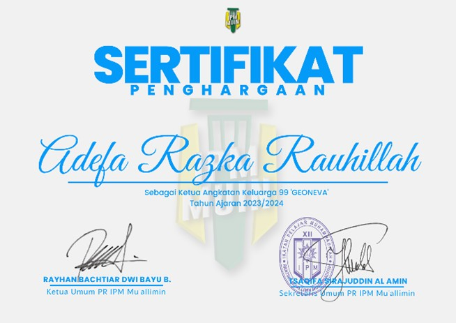
Ketua angkatan lulusan 2025 tahun 2023/2024
Saya dipercaya sebagai ketua angkatan lulusan 2025 di Madrasah Mu’allimin Muhammadiyah Yogyakarta sejak tahun 2023 sebagai bentuk kepercayaan atas kemampuan kepemimpinan dan tanggung jawab yang saya miliki. Dalam peran ini, saya berperan dalam mengoordinasikan komunikasi antar siswa, memimpin berbagai kegiatan angkatan, serta menjaga kekompakan dan arah bersama hingga masa kelulusan.